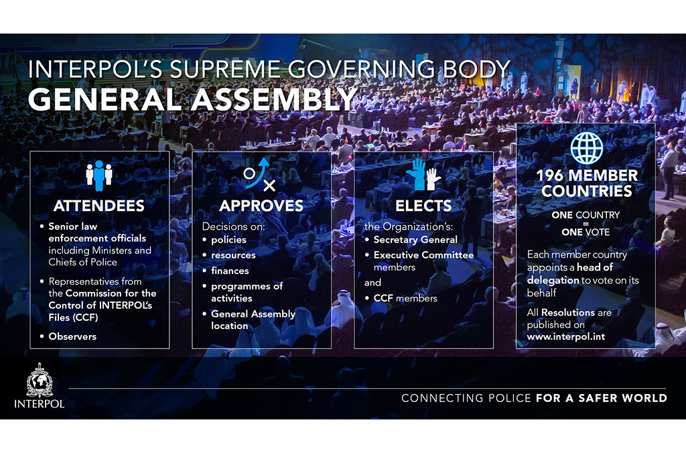

Asamblea general
La Asamblea General es el órgano supremo de gobierno de INTERPOL y está compuesta por delegados designados por los gobiernos de nuestros países miembros.Se reúne una vez al año y toma todas las decisiones importantes que afectan a la política general, los recursos necesarios para la cooperación internacional, los métodos de trabajo, las finanzas y los programas de actividades.
Estas decisiones adoptan la forma de resoluciones.

Centenario de INTERPOL
En 2023 se cumple el centenario de la Organización, y esta Asamblea General se celebrará en Viena (Austria), en reconocimiento del hecho de que esta es la ciudad donde se creó INTERPOL en 1923.El evento, que reunirá a jefes de policía y altos funcionarios de todo el mundo, también cerrará un año de celebraciones para nuestros países miembros, que han incluido llevar la bandera de INTERPOL a destinos emblemáticos como la cima del Monte Everest.
Durante la conferencia de cuatro días que se desarrollará del 28 de noviembre al 1 de diciembre, altos funcionarios policiales de todo el mundo abordarán las amenazas actuales y emergentes, incluido el crecimiento significativo del crimen organizado transnacional.
Agénda
Esta sesión de la Asamblea General incluirá paneles y presentaciones sobre los siguientes temas:- Actividades de los países miembros para promover un siglo de aprendizaje, colaboración e innovación.
- Tendencias emergentes, impacto operativo y preparación para el futuro.
- Cooperación policial y debates sobre el uso de tecnologías emergentes por parte de las fuerzas del orden.
- Una revisión de las amenazas críticas de la delincuencia global que enfrenta la policía hoy en día, incluido el crimen organizado transnacional, los delitos ambientales y la prevención de la circulación de material de abuso sexual infantil.
- Un diálogo global entre las organizaciones policiales regionales para mejorar y mantener la coordinación estratégica y operativa.
- Fortalecer los marcos de cooperación como la gobernanza y las normas sobre el procesamiento de datos.
- Aprobar presupuesto y actividades para 2024
- Asociaciones operativas y estratégicas con socios gubernamentales, no gubernamentales y de las Naciones Unidas
- La próxima generación: reclutar y retener el talento y la diversidad en la Secretaría General.